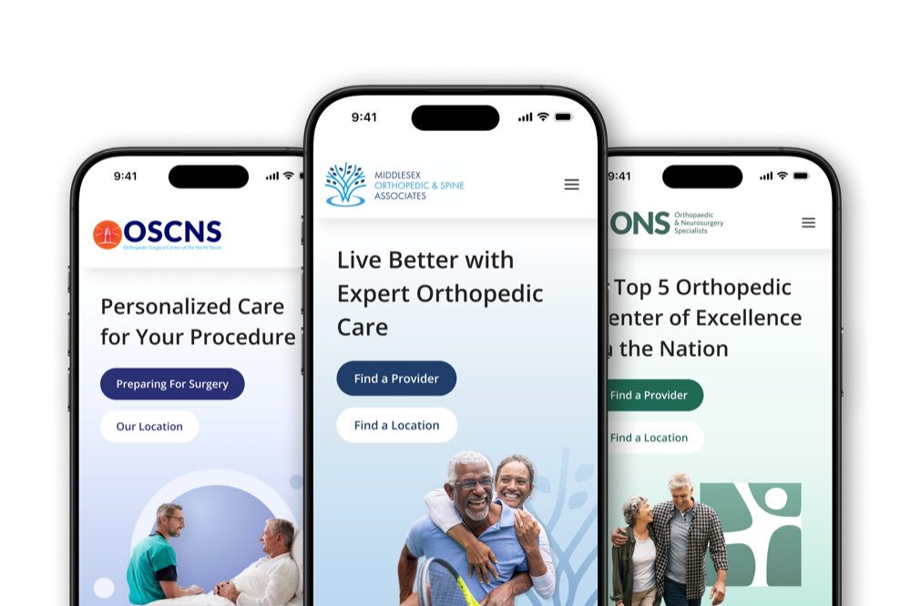
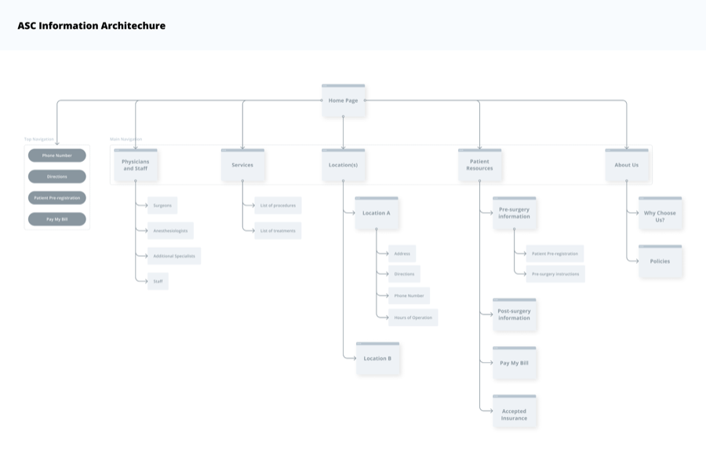
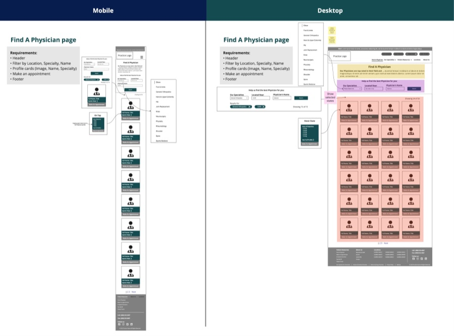
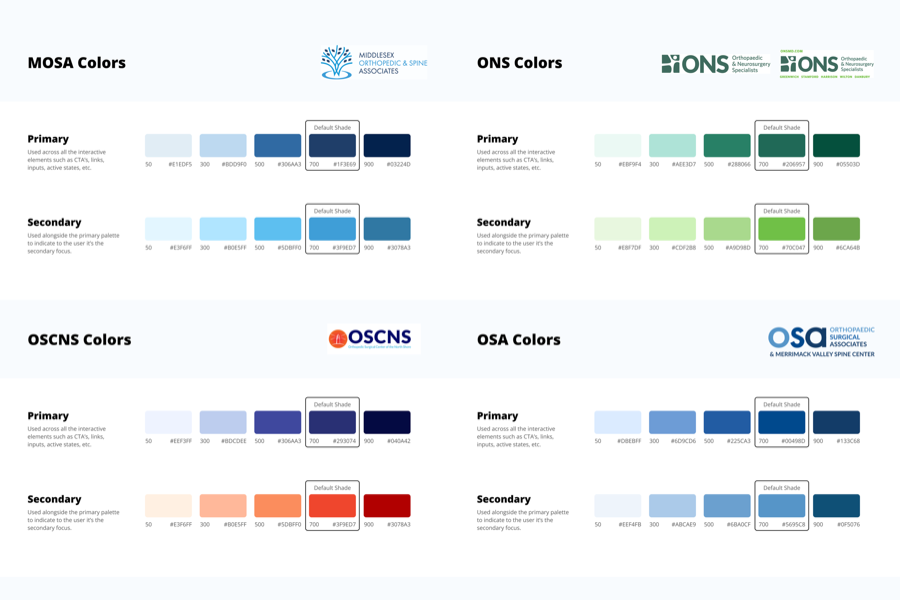
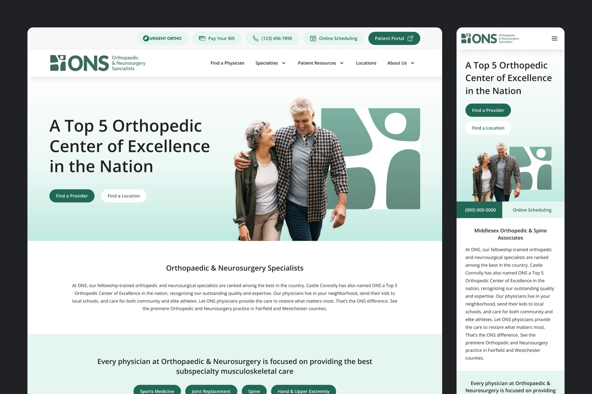
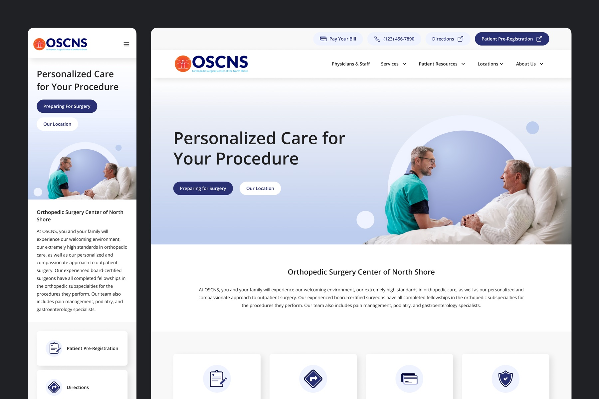
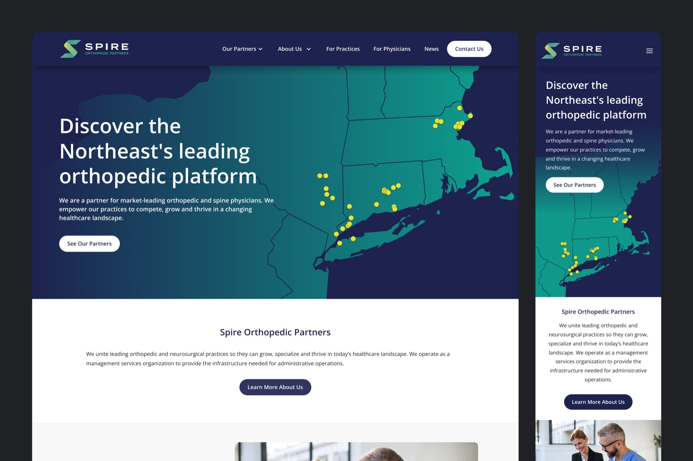

Scaling a Multi-Brand Orthopedic Platform
Created a scalable design system and information architecture for a multi-brand orthopedic network, enabling new practice websites and the corporate site to launch from a shared platform.

Overview
Following a series of acquisitions, Spire Orthopedic Partners inherited a growing network of independent orthopedic practice websites, each with its own design, navigation, and content structure. Every new acquisition meant rebuilding another website from scratch, resulting in inconsistent patient experiences and an inefficient design process.
As Product Designer, I led the UX strategy and design system efforts to create a flexible platform that could support multiple brands while providing patients with a consistent, intuitive experience. In addition to the practice websites, I also designed the template for Spire Orthopedic Partners' corporate website, reusing the same design patterns to create a cohesive experience across the entire organization.
The Challenge
An audit of seven existing practice websites revealed recurring usability issues across the network.
- Mobile experiences were inconsistent, despite most traffic coming from mobile devices.
- Appointment scheduling, the primary conversion goal, varied dramatically between practices.
- Accessibility support was limited across nearly every site.
- Navigation, forms, and content organization differed from one brand to the next, forcing patients to relearn the experience with every practice.
The challenge was not redesigning a single website. It was creating a platform that could scale as Spire continued acquiring new practices.
Research Insights
To better understand patient needs, I developed four personas representing common orthopedic care journeys, from chronic pain management to sports injuries.
Across every persona, three priorities consistently emerged:
- Clear insurance information
- Convenient locations
- Trust signals such as physician credentials, ratings, and referrals
These insights shaped the information hierarchy across the platform, ensuring patients could quickly evaluate providers and confidently take the next step toward care.
My Approach
Creating a Scalable Information Architecture
Rather than designing one rigid solution, I created two flexible site models that could accommodate different types of organizations within the network.
The Practice model centered around physicians, specialties, locations, and patient resources. The Ambulatory Surgery Center model focused on surgeons, procedures, patient preparation, and locations. Both models shared the same navigation patterns, utility actions, and conversion paths. This allowed newly acquired organizations to fit into an established framework without redesigning the experience from the ground up.
Designing Core Experiences
I designed responsive templates for the platform's highest value experiences, including:
- Homepage
- Find a Physician
- Find a Location
- Physician Profiles
- Specialty and Condition Pages
Each template prioritized the information patients valued most, including provider expertise, insurance acceptance, locations, and appointment scheduling, while remaining flexible enough to support practices of different sizes.
Building a Multi-Brand Design System
The foundation of the project was a reusable design system that balanced consistency with brand flexibility.
The system included:
- Shared typography, spacing, and interaction patterns
- Modular UI components and page templates
- Brand-specific color palettes for each practice
- Documented UX standards to support future implementations
Rather than serving only the practice websites, the design system also became the foundation for Spire Orthopedic Partners' corporate website. I designed the corporate site using the same components and templates, extending the system beyond patient-facing practices and creating a unified digital presence for the organization.



Outcome
The project transformed Spire's approach to digital growth. Instead of rebuilding websites for every acquisition, new practices could be launched using an established information architecture, reusable components, and standardized UX patterns.
The same design system also powered Spire Orthopedic Partners' corporate website, proving that the platform could scale beyond individual practices while maintaining a consistent visual language and user experience.
By designing a system instead of a collection of websites, I helped establish a foundation that supports future acquisitions, reduces design and development effort, and delivers a more consistent experience for patients across the network.
Key Contributions
- Audited seven orthopedic practice websites to identify shared UX challenges
- Developed personas and experience strategy for orthopedic patient journeys
- Designed scalable information architecture for multiple site models
- Created responsive templates for core patient experiences
- Built a reusable multi-brand design system
- Designed the corporate website using the same shared component library
- Established UX standards to streamline future practice launches


